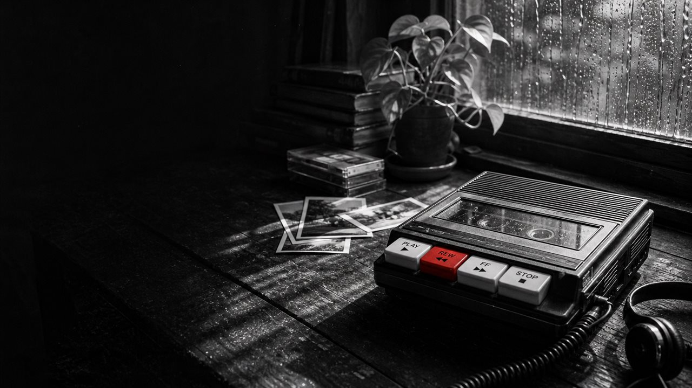
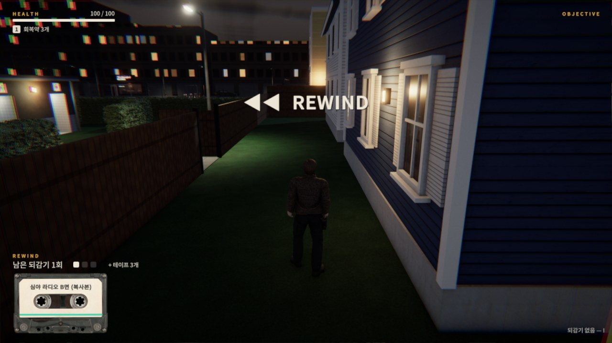
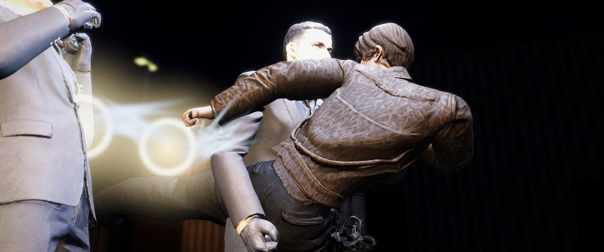
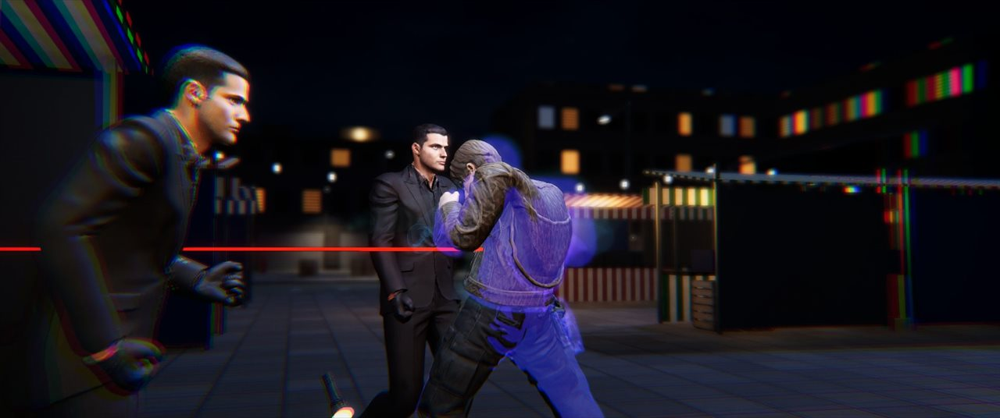
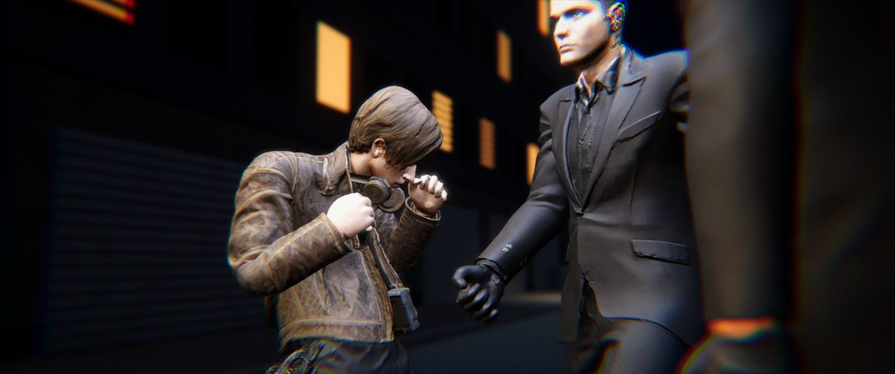
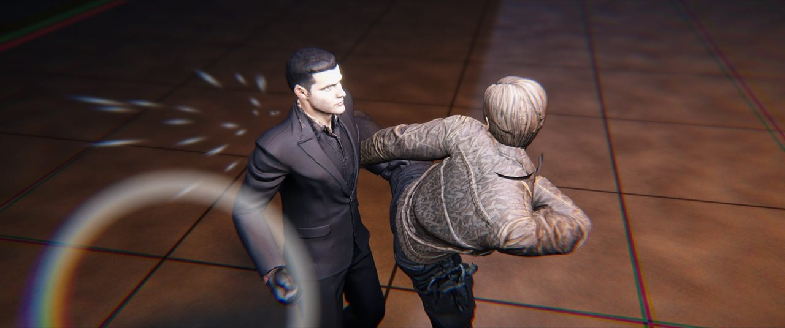
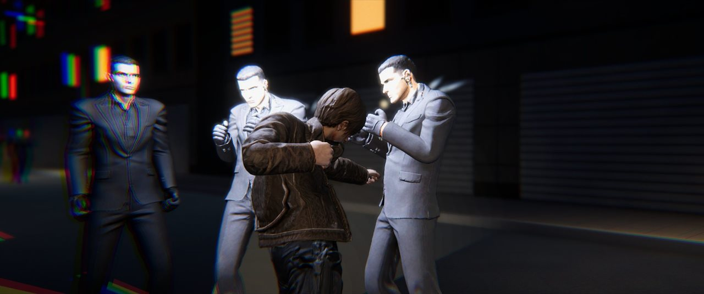

Unity 6 · Windows PC · 웹 브라우저(itch.io)
| 게임 타이틀 | REWIND |
|---|---|
| 게임 장르 | 3인칭 액션 · 잠입 (선형 스토리, 현대 도시 누아르) |
| 게임 소개 |
|
| 플레이 타임 | 본편 약 1시간 (프롤로그 → 1~5장 → 엔딩, 엔딩 2종) 체험판 약 10분 |



장르가 있는 테이프를 끼우고 R을 누르면 시간이 느려지며 두 가지 중 하나를 고릅니다 — Q 되감기 또는 E 장르 능력(횟수 1회).




| 구성 | 프롤로그(대니의 택배 → 죽음과 첫 되감기 → 첫 싸움, 약 5분) → 1장 3번 부두 반장전(전투 · 테이프 태우기 되감기, 약 5분) → 체험판 끝 → 게임이 닫히고 전시 런처로 |
|---|---|
| 박람회용 설정 | 지스타 전시 런처(GstarLauncher)용 config 포함 · 이어하기 없이 늘 처음부터 · 2분 동안 입력이 없으면 게임이 닫히고 런처로 돌아감 · 부두에서 시티팝 테이프를 받아 장르 능력을 써 볼 수 있음 |
| 조작 | WASD 이동 · 마우스 시점 · Shift 달리기 · 좌클릭 공격(연타) · 우클릭 구르기 · Q 몰래 제압 · F 상호작용 · R(길게) 되감기(장르 테이프는 R → Q 되감기 / E 능력) · I 인벤토리 · 1 회복약 · Esc 메뉴 |